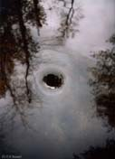

Charles H. Bennett
IBM Research, Yorktown Heights, NY 10598, USA
phone (+1) 914-945-3118, fax 945-2141

Biography
Publications
Photographs Set 1 , Set 2 , Set 3
Music
Talks and Reports on Quantum Information and
Physics of Information
A General Talk on Quantum
Information Sept. 2000
NSF Report
on Quantum Information Science
A Quantum Love Story
Talk on Teleportation,
Simulated
Time Travel, and how to Flirt with Someone who has fallen into a Black
Hole
"Is Information Physical
or is Physics Informational" (zipped ppt talk with A/V clips--extract
before use)
Other Stuff
English Phrases with No
Meaning, and Infinitely Many Meanings
Thoughts on Authentication vs
Privacy, and Authentication by Online Challenges
Talk on Information Access
and Literacy in West Africa
Talk at Hampshire
College on Mathematics and Ethics
External Links
IBM Quantum
Information Page
Quantum
Teleportation basic theory explained
Laboratory
for Theoretical and Quantum Computing at Université de
Montréal
Dan Gottesman's Quantum
Computation Preprint Reviews page informal reviews of the current
literature
Oxford Quantum Information page
Caltech
Physics 219: John Preskill and Alexei Kitaev's Quantum Information
course
ES8OP,
my wife's housing outreach office
Minuteman
Pizza
Institute
of Holistic Computer Wellness